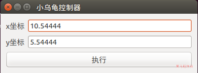
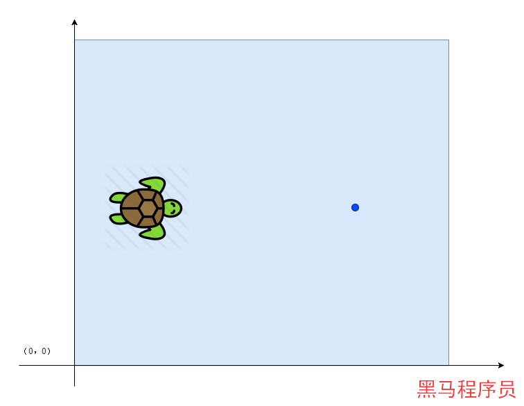

<!DOCTYPE lake>
<h1 data-lake-id="n9GMn" id="n9GMn"><span data-lake-id="u87b3ae8d" id="u87b3ae8d">案例设计</span></h1><p data-lake-id="u2ca2f12d" id="u2ca2f12d"></p><p data-lake-id="u81d03816" id="u81d03816"><span class="lake-fontsize-14" data-lake-id="ua6f87681" id="ua6f87681" style="color: rgba(0, 0, 0, 0.87)">通过指定目标点的X和Y值，让小乌龟到达指定点。</span></p><h2 data-lake-id="iMGv4" id="iMGv4"><span data-lake-id="ua60e281c" id="ua60e281c" style="color: rgba(0, 0, 0, 0.87)">运动分析</span></h2><p data-lake-id="uc5e89655" id="uc5e89655"><span class="lake-fontsize-14" data-lake-id="u815cfaac" id="u815cfaac" style="color: rgba(0, 0, 0, 0.87)">小乌龟如何到达目标点?</span></p><h3 data-lake-id="zSDgQ" id="zSDgQ"><span data-lake-id="u42bfb5f3" id="u42bfb5f3" style="color: rgba(0, 0, 0, 0.87)">数据获取</span></h3><p data-lake-id="u8b7d7720" id="u8b7d7720"><span class="lake-fontsize-14" data-lake-id="u493ea376" id="u493ea376" style="color: rgba(0, 0, 0, 0.87)">小乌龟当前的坐标和角度</span></p><p data-lake-id="u14bae394" id="u14bae394"><span class="lake-fontsize-14" data-lake-id="u8f12323d" id="u8f12323d" style="color: rgba(0, 0, 0, 0.87)">可以通过订阅</span><span class="lake-fontsize-12" data-lake-id="ue488204e" id="ue488204e" style="color: rgb(55, 71, 79)">/turtle1/pose</span><span class="lake-fontsize-14" data-lake-id="ua3c53f51" id="ua3c53f51" style="color: rgba(0, 0, 0, 0.87)">获得相关的信息</span></p><h3 data-lake-id="TGP8b" id="TGP8b"><span data-lake-id="u64871eff" id="u64871eff" style="color: rgba(0, 0, 0, 0.87)">控制操作</span></h3><p data-lake-id="u050a646e" id="u050a646e"><span class="lake-fontsize-14" data-lake-id="ub74a0681" id="ub74a0681" style="color: rgba(0, 0, 0, 0.87)">通过设置小乌龟的线速度和角速度可以让小乌龟动起来</span></p><p data-lake-id="u08521f94" id="u08521f94"><span class="lake-fontsize-14" data-lake-id="ubd7b967d" id="ubd7b967d" style="color: rgba(0, 0, 0, 0.87)">可以通过发布数据到</span><span class="lake-fontsize-12" data-lake-id="u0131d2fb" id="u0131d2fb" style="color: rgb(55, 71, 79)">/turtle1/cmd_vel</span><span class="lake-fontsize-14" data-lake-id="u0e3f1a3d" id="u0e3f1a3d" style="color: rgba(0, 0, 0, 0.87)">控制小乌龟移动</span></p><h3 data-lake-id="NRmEV" id="NRmEV"><span data-lake-id="ud05f0c08" id="ud05f0c08" style="color: rgba(0, 0, 0, 0.87)">示例代码</span></h3><p data-lake-id="ub66f400b" id="ub66f400b"><span class="lake-fontsize-14" data-lake-id="u6eb86838" id="u6eb86838" style="color: rgba(0, 0, 0, 0.87)">发布者与订阅者</span></p><span class="yuque-card-unsupported">[codeblock]</span><p data-lake-id="u2358b64b" id="u2358b64b"><span class="lake-fontsize-14" data-lake-id="udcd04b71" id="udcd04b71" style="color: rgba(0, 0, 0, 0.87)">获取小乌龟实时位置信息的回调</span></p><span class="yuque-card-unsupported">[codeblock]</span><h1 data-lake-id="zoUgg" id="zoUgg"><span data-lake-id="u719958ab" id="u719958ab" style="color: rgba(0, 0, 0, 0.87)">直线运动计算</span></h1><p data-lake-id="u95550543" id="u95550543"></p><p data-lake-id="ufedb8bf6" id="ufedb8bf6"><span class="lake-fontsize-14" data-lake-id="ud0255ac8" id="ud0255ac8" style="color: rgba(0, 0, 0, 0.87)">通过最简单的示例，先解决指线运动。</span></p><span class="yuque-card-unsupported">[codeblock]</span><p data-lake-id="uaed9d0f6" id="uaed9d0f6"><span class="lake-fontsize-14" data-lake-id="uf94c11c6" id="uf94c11c6" style="color: rgba(0, 0, 0, 0.87)">我们已知的是当前小乌龟的坐标turtle(x, y) ，和目标点dist(x, y)，我们要去得到是小乌龟的速度。</span></p><p data-lake-id="u0dd46b76" id="u0dd46b76"><span class="lake-fontsize-14" data-lake-id="u918cd996" id="u918cd996" style="color: rgba(0, 0, 0, 0.87)">首先我们需要计算出两点间的距离：</span></p><span class="yuque-card-unsupported">[codeblock]</span><p data-lake-id="u0cdb675c" id="u0cdb675c"><span class="lake-fontsize-14" data-lake-id="ub3962591" id="ub3962591" style="color: rgba(0, 0, 0, 0.87)">其次我们需要确定的是时间time，我们可以给定一个预期的值。</span></p><p data-lake-id="u77588e08" id="u77588e08"><span class="lake-fontsize-14" data-lake-id="u1ef4a1a0" id="u1ef4a1a0" style="color: rgba(0, 0, 0, 0.87)">我们可以将计算的结果进行运行测试。</span></p><p data-lake-id="u8b24be14" id="u8b24be14"><span class="lake-fontsize-14" data-lake-id="u7e53ff55" id="u7e53ff55" style="color: rgba(0, 0, 0, 0.87)">测试发现，小乌龟默认运行的时间是1s。没有提供给我们设置时间接口。</span></p><h1 data-lake-id="a3weY" id="a3weY"><span data-lake-id="u448a9bba" id="u448a9bba" style="color: rgba(0, 0, 0, 0.87)">解决时间不可控的问题</span></h1><p data-lake-id="ue57e5029" id="ue57e5029"><span class="lake-fontsize-14" data-lake-id="u40b3058a" id="u40b3058a">方式一:</span></p><span class="yuque-card-unsupported">[codeblock]</span><p data-lake-id="u211601d5" id="u211601d5"><span class="lake-fontsize-14" data-lake-id="u86d6b4ae" id="u86d6b4ae">方式二:</span></p><span class="yuque-card-unsupported">[codeblock]</span><p data-lake-id="uec164e3d" id="uec164e3d"><span class="lake-fontsize-14" data-lake-id="u724b0235" id="u724b0235">方式三:</span></p><span class="yuque-card-unsupported">[codeblock]</span><h1 data-lake-id="IOXyo" id="IOXyo"><span data-lake-id="uc0e33437" id="uc0e33437" style="color: rgba(0, 0, 0, 0.87)">思考：是否存在完美的事物</span></h1><ul list="ubb8eb16d"><li data-lake-id="ufa49a1f5" fid="u38ca2a08" id="ufa49a1f5"><span class="lake-fontsize-14" data-lake-id="ub6a4a16f" id="ub6a4a16f" style="color: rgba(0, 0, 0, 0.87)">速度是否是绝对平均</span></li><li data-lake-id="u27407be7" fid="u38ca2a08" id="u27407be7"><span class="lake-fontsize-14" data-lake-id="uf2f1e45e" id="uf2f1e45e" style="color: rgba(0, 0, 0, 0.87)">距离差值是否是绝对为0</span></li><li data-lake-id="u4cc31a43" fid="u38ca2a08" id="u4cc31a43"><span class="lake-fontsize-14" data-lake-id="uae8a5561" id="uae8a5561" style="color: rgba(0, 0, 0, 0.87)">时间是否绝对为预期</span></li></ul>